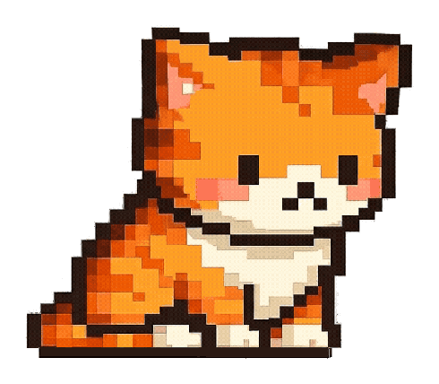
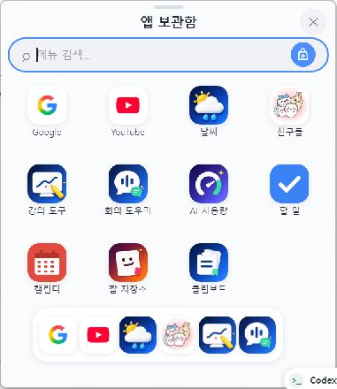
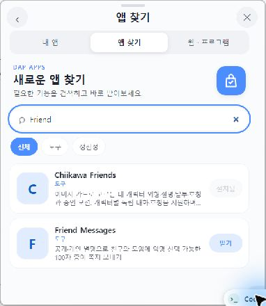
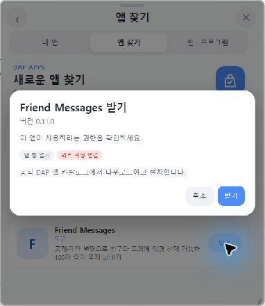
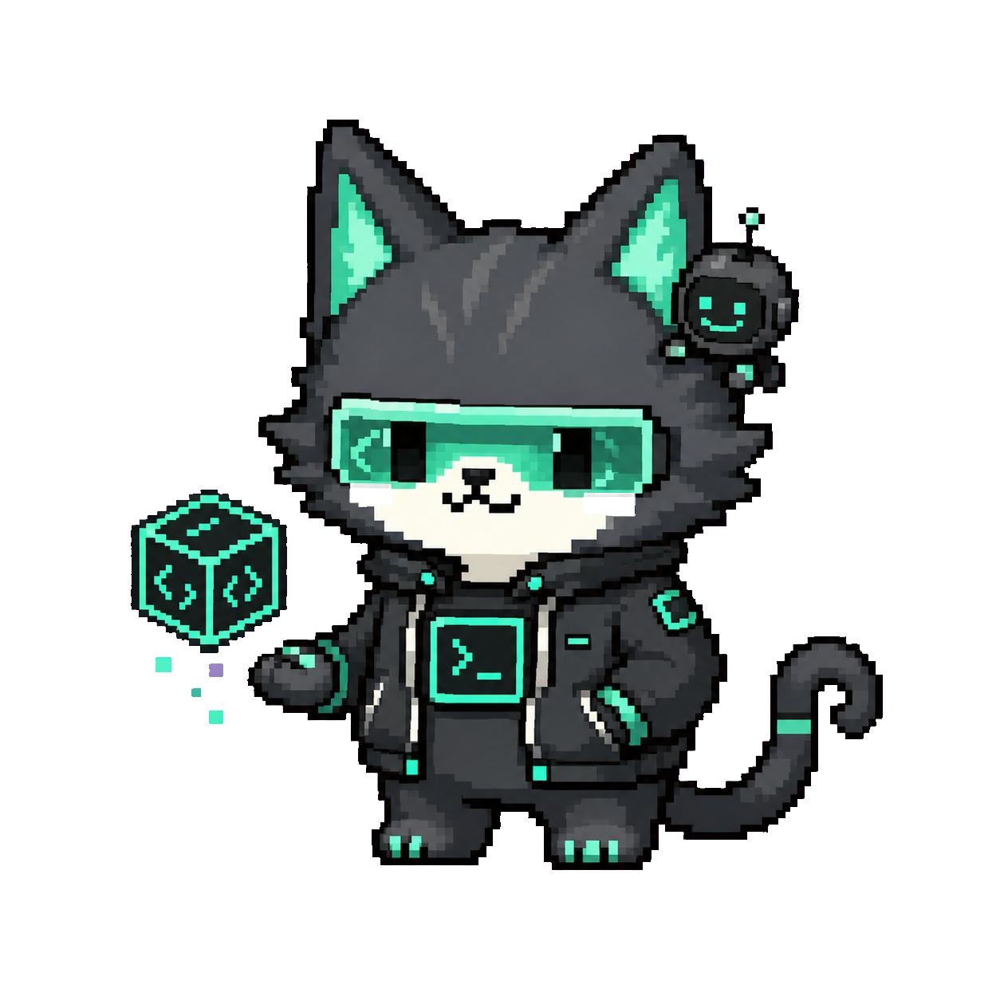

작업 중

DAP overview
DAP은 바탕화면 위 고양이로 시작하는 AI OS입니다
DAP v1.6.17은 캐릭터와 대화하고 필요한 앱을 직접 찾아 설치하는 데스크톱 AI OS입니다. 앱 보관함에서 앱·웹·프로그램을 열고 퀵 메뉴에 고정하거나, 앱 찾기에서 공식 카탈로그를 검색하세요.
- 지원 플랫폼
- Windows 11 · macOS Apple Silicon · macOS Intel
- 연결
- Claude · Codex · Google Calendar
- 확장
- Todo · Calendar · 8개 플러그인
Windows v1.6.17 · 실제 앱 화면
새 앱을 찾고, 자주 쓰는 앱은 가까이
앱 보관함에서 실행하고 퀵 메뉴에 고정하세요. 앱 찾기에서 이름·기능·카테고리로 탐색하고, 사용할 권한을 확인한 뒤 설치합니다.



Core features
빠른 실행
Windows에서는 Ctrl+Shift+Space, macOS에서는 Cmd+Shift+Space로 어디서든 실행창을 열어 DAP에게 요청합니다.
Claude/Codex 연결
이미 로그인한 Claude 또는 Codex를 연결해, 따로 API Key를 입력하지 않고 바로 사용할 수 있습니다.
QUICK ACTIONS
텍스트 선택 퀵액션은 기본 꺼짐입니다. 설정에서 켜면 선택한 문장 가까이에서 다듬기, 번역, 요약, 질문과 웹 검색을 실행할 수 있습니다. 기존에 저장한 설정은 유지됩니다.
PET INTERFACE
기본 고양이부터 플러그인 캐릭터까지, 선택한 외형이 작업·생각·기쁨 같은 상태를 보여줍니다. 말투 적용 여부는 외형과 별도로 선택할 수 있습니다.
Current in v1.6.17
앱 보관함과 퀵 메뉴
설치한 앱과 웹·프로그램을 한곳에서 열고, 자주 쓰는 항목은 dock에 최대 6개 고정합니다. 드래그로 순서를 바꾸고, 보조 클릭 메뉴나 키보드로도 관리할 수 있습니다.
검색해서 찾는 앱
앱 보관함의 가방 아이콘에서 앱 찾기를 엽니다. 이름·기능 검색과 카테고리 필터로 공식 카탈로그를 살펴보고, 설치됨 표시로 중복 설치를 구분합니다.
설치 전에 확인하는 권한
받기를 누르면 앱 이름·버전·요청 권한을 먼저 보여줍니다. 내용을 확인하고 다시 받기를 선택하면 공식 카탈로그에서 설치합니다. 취소하면 설치하지 않습니다.
방해를 줄인 작업 알림
작업 보고서를 자동으로 띄우지 않고 완료·실패·승인 필요 상태만 짧게 알립니다. 트레이의 작업 결과에서 실행 중 최근 20개 결과를 다시 확인하세요.
할 일·일정·데일리 브리핑
Todo는 리스트와 칸반, Calendar는 월·주 보기와 Google Calendar 연결을 제공합니다. 데일리 브리핑을 켜고 시간을 정하면 오늘의 할 일과 일정을 한 번에 받습니다.
필요한 기능은 앱으로
Chiikawa Friends, Friend Messages, Weather, Meeting Assistant, Meme Vault 등 공식 앱 카탈로그에서 필요한 기능을 더하세요. 기술 문서와 배포 파일에서는 기존 plugin.yaml·플러그인 API를 유지합니다.
Pet states
상태가 보이는 작은 고양이 인터페이스
완료 신호
가벼운 반응
조용한 대기
Custom mini pets
작고 새로운 캐릭터를 바탕화면에
미니 모드에는 Claude, Codex, Gemini 캐릭터가 기본 프로필로 들어 있습니다. 평소 모습과 반응 모습을 직접 등록하고 크기도 조절할 수 있습니다.

캐릭터 프로필은 설정에서 추가·수정·삭제할 수 있으며, 연결한 AI와 별개로 선택할 수 있습니다.
Next steps
DAP을 더 편하게 시작하는 방법
설치 후 바로 쓰는 기본 흐름부터, 필요할 때 더해 쓰는 확장 기능까지 한눈에 둘러볼 수 있습니다.
Getting started
01
다운로드 & 설치
Windows, macOS Apple Silicon, macOS Intel 설치 파일 중 현재 환경에 맞는 파일을 내려받아 설치합니다.
02
Claude/Codex 연결
온보딩 또는 설정에서 Claude/Codex를 선택합니다. 이미 로그인된 계정을 이어서 사용할 수 있습니다.
03
단축키로 즉시 호출
Windows에서는 Ctrl+Shift+Space와 Ctrl+Alt+C, macOS에서는 Cmd+Shift+Space와 Cmd+Option+C로 빠른 실행과 채팅을 엽니다.
자주 묻는 질문
DAP은 무엇인가요?
DAP(Desk AI Pet)은 Windows/macOS 바탕화면 위에 머무는 데스크톱 AI 펫입니다.
변경 작업은 바로 실행되나요?
아니요. 파일 변경이나 화면 제어 같은 실행 작업은 범위와 내용을 먼저 보여주고 사용자 확인을 받은 뒤 진행합니다.
별도 설정이 많이 필요한가요?
기본 흐름은 별도 API Key 입력이 아니라, 이미 로그인한 Claude/Codex를 연결해 사용하는 방식입니다.
플러그인을 만들거나 등록할 수 있나요?
플러그인 페이지에서 DAP에 더해 쓸 수 있는 확장 기능을 둘러볼 수 있습니다.